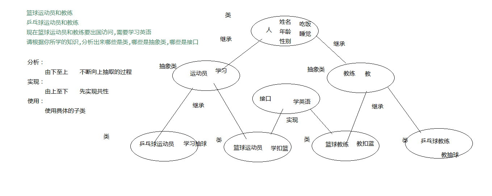

一、インターフェース
1.1 インターフェースの概要
インターフェースは機能の集合であり、同様にデータ型の一種と見なすことができ、抽象クラスよりもさらに抽象度が高い。类 。
インターフェースは備えるべきメソッドを記述するだけで、具体的な実装は持ちません。具体的な実装はインターフェースの実装クラス（インターフェースのサブクラスに相当）が行います。これにより機能の定義と実装を分離し、プログラム設計を最適化します。
1.2 インターフェースの形式と使用
1.2.1 インターフェースの形式
クラスを定義するのとはclass異なり、インターフェース定義時には使用する必要がありますinterfaceキーワード。
インターフェースを定義するファイルは依然として.javaファイルです。宣言時に使用されるのはinterfaceキーワードですが、コンパイル後も生成されるのは.classファイルです。このことから、インターフェースは機能の宣言のみを含む特別なクラスと見なすことができます。
定義形式：public interface 接口名 {
抽象方法1;
抽象方法2;
抽象方法3;
}
1.2.2 インターフェースの使用
インターフェース内のメソッドはすべて抽象メソッドです。直接 `new` でインターフェースを生成してメソッドを呼び出しても意味がなく、Java でもそれは許可されていません。
クラスとインターフェースの関係は実装関係であり、つまりクラスがインターフェースを実装します。実装の動作は継承に似ていますが、キーワードが異なり、実装にはimplements。
他のクラス（実装クラス）がインターフェースを実装した後、それは次のように宣言するのに相当します：私はこのインターフェースの機能を備えるべきである。実装クラスは具体的な機能を実現するためにメソッドをオーバーライドする必要があります。
形式：
class 类 implements 接口 {
重写接口中方法
}
クラスがインターフェースを実装すると、そのクラスはインターフェース内の抽象メソッドを継承します。このとき、そのクラスは抽象メソッドをオーバーライドして具体的なロジックを完成させる必要があります。
1.2.3 ケースコード1
例
1.3 インターフェースのメンバーの特徴
-
1、インターフェース内では変数を定義できますが、変数は固定の修飾子で修飾される必要があります。`public static final` です。したがって、インターフェース内の変数は定数とも呼ばれ、その値は変更できません。後ほど `final` キーワードについて解説します。
-
2、インターフェース内ではメソッドを定義できます。メソッドにも固定の修飾子があり、`public abstract` です。
-
3、インターフェースはオブジェクトを生成できません。
-
4、サブクラスはインターフェース内のすべての抽象メソッドをオーバーライドした後にのみインスタンス化できます。そうでない場合、サブクラスは抽象クラスになります。
1.3.1 ケースコード2
例
1.4 インターフェースとクラスの関係
- A: クラスとクラスの間：継承関係。1つのクラスは直接1つの親クラスしか継承できませんが、多重継承をサポートします。
- B: クラスとインターフェースの間：実装関係のみ。1つのクラスは複数のインターフェースを実装できます。
- C: インターフェースとインターフェースの間：継承関係のみ。1つのインターフェースは複数のインターフェースを継承できます。
1.4.1 ケースコード3
例
1.5 インターフェースの思想
これまでインターフェースのコード上の表現を学びました。次にインターフェースの思想を学びます。続いて、日常生活の例から説明します。
例を挙げる：私たちは皆、コンピューターに多くの差し込み口があることを知っています。これらの差し込み口には対応するデバイスを挿すことができます。なぜこれらのデバイスを挿すことができるのでしょうか？主な理由は、これらのデバイスが製造時にこの差し込み口の使用規則に適合しているからです。そうでなければ、インターフェースに挿すことも、使用することもできません。この差し込み口の登場により、より多くのデバイスを使用できるようになったのです。
インターフェースの登場により、後々の使用と保守が容易になります。一方はインターフェースを使用し（例：コンピューター）、もう一方はインターフェースを実装します（差し込み口に挿すデバイス）。例えば、ノートパソコンがこの規則（インターフェース）を使用し、コンピューター周辺機器がこの規則（インターフェース）を実装します。
コレクション体系ではインターフェースが大量に使用されています。
Collection 接口
List 接口
ArrayList 实现类
LinkedList 实现类
Set 接口
1.6 インターフェースの長所
- 1. クラスとインターフェースの関係は実装関係であり、しかも多実装です。1つのクラスは複数のインターフェースを実装できます。クラスとクラスの間は継承関係で、Java の継承は単一継承であり、1つのクラスは1つの親クラスしか持てません。これにより継承の限界が打破されます。
- 2. 外部に規則を提供する（USBインターフェース）
- 3. プログラムの結合度を下げる（モジュール化開発が可能になり、規則を定義し、各自が自分のモジュールを実装することで、開発効率が向上します）
1.7 インターフェースと抽象クラスの違い
1. 共通点：絶えず抽出を行い、具体的実装のない抽象メソッドを抽出する。どちらもインスタンス化できません（オブジェクトを生成できません）。
2. 相違点
1: クラスとの関係
(1) クラスとインターフェースは実装関係であり、しかも多実装です。1つのクラスは複数のインターフェースを実装できます。クラスと抽象クラスは継承関係で、Java の継承は単一継承、多層継承です。1つのクラスは1つの親クラスしか継承できませんが、祖父クラスを持つことはできます。
(2) 相違点2： メンバー
a.成员变量 抽象类可以有成员变量，也可以有常量 接口只能有常量，默认修饰符public static final b.成员方法 抽象类可以有抽象方法，也可以有非抽象方法 接口只能有抽象方法，默认修饰符 public abstract c.构造方法 抽象类有构造方法，为子类提供 接口没有构造方法
1.8 スポーツ選手のケース

1.8.1 ケースコード4
例
二、ポリモーフィズム
2.1 ポリモーフィズムの概要
ポリモーフィズムは、カプセル化、継承に続く、オブジェクト指向の第三の大きな特性です。
現実の事物はしばしば複数の形態を示します。例えば、学生は人間の一種です。具体的な同級生である張三は学生であり、かつ人間でもあり、つまり2つの形態が現れます。
Java はオブジェクト指向言語として、同様に事物の複数の形態を記述できます。例えば、Student クラスが Person クラスを継承した場合、Student のオブジェクトは Student でもあり、Person でもあります。
2.2 ポリモーフィズムの定義と使用形式
ポリモーフィズムの定義形式：つまり、親クラスの参照変数が子クラスのオブジェクトを指すことです。
父类类型 变量名 = new 子类类型(); 变量名.方法名();
A：通常のクラスのポリモーフィズム定義の形式
父类 变量名 = new 子类();
例：
class Fu {}
class Zi extends Fu {}
//类的多态使用
Fu f = new Zi();
B：抽象クラスのポリモーフィズム定義の形式
抽象类 变量名 = new 抽象类子类();
例：
abstract class Fu {
public abstract void method();
}
class Zi extends Fu {
public void method(){
System.out.println(“重写父类抽象方法”);
}
}
//类的多态使用
Fu fu= new Zi();
C：インターフェースのポリモーフィズム定義の形式
接口 变量名 = new 接口实现类();
例：
interface Fu {
public abstract void method();
}
class Zi implements Fu {
public void method(){
System.out.println(“重写接口抽象方法”);
}
}
//接口的多态使用
Fu fu = new Zi();
2.2.1 サンプルコード
例
2.3 ポリモーフィズムのメンバーの特徴
A:多態メンバー変数
子親クラスで同名のメンバー変数が存在する場合、多態でその変数を呼び出すとき：
- コンパイル時：参照型変数が属するクラスに呼び出されたメンバー変数があるかどうかを参照する。なければ、コンパイル失敗。
- 実行時：同様に参照型変数が属するクラスのメンバー変数を呼び出す。
簡単に覚える：コンパイルも実行も等号の左側を参照する。コンパイル・実行とも左側を見る。
B:多態メンバーメソッド
- コンパイル時：参照変数が属するクラスを参照し、そのクラスに呼び出されたメソッドがなければ、コンパイル失敗。
- 実行時：参照変数が指すオブジェクトが属するクラスを参照し、そのオブジェクトが属するクラスのメンバーメソッドを実行する。
要するに：コンパイルは左側を見て、実行は右側を見る
2.3.1 サンプルコード6
例
2.4 ポリモーフィズムにおけるアップキャストとダウンキャスト
多態の型変換はアップキャストとダウンキャストの2種類に分けられる：
A:アップキャスト：子クラスのオブジェクトを親クラスの参照に代入すると、それがアップキャストです。多態自体がアップキャストのプロセスです。
使用形式：
父类类型 变量名 = new 子类类型();
例：
Person p = new Student();
B:ダウンキャスト：すでにアップキャストされた子クラスのオブジェクトは、強制型変換の形式を使用して親クラスの参照を子クラスの参照に変換できます。このプロセスがダウンキャストです。直接親クラスのオブジェクトを作成した場合、ダウンキャストはできません。
使用形式：
子クラス型 変数名 = (子クラス型) 親クラス型の変数;
例：
Student stu = (Student) p; // 变量p 实际上指向 Student 对象
例
2.5 ポリモーフィズムの長所と短所
例
原文アドレス：https://www.cnblogs.com/yoke/p/7453864.html
クリックしてメモを共有
ノートは本記事の内容を拡張したものである必要があります！
記事の投稿は、ここをクリック
登録招待コードの取得方法
ノートを共有する前にはログインが必要です！
登録招待コードの取得方法